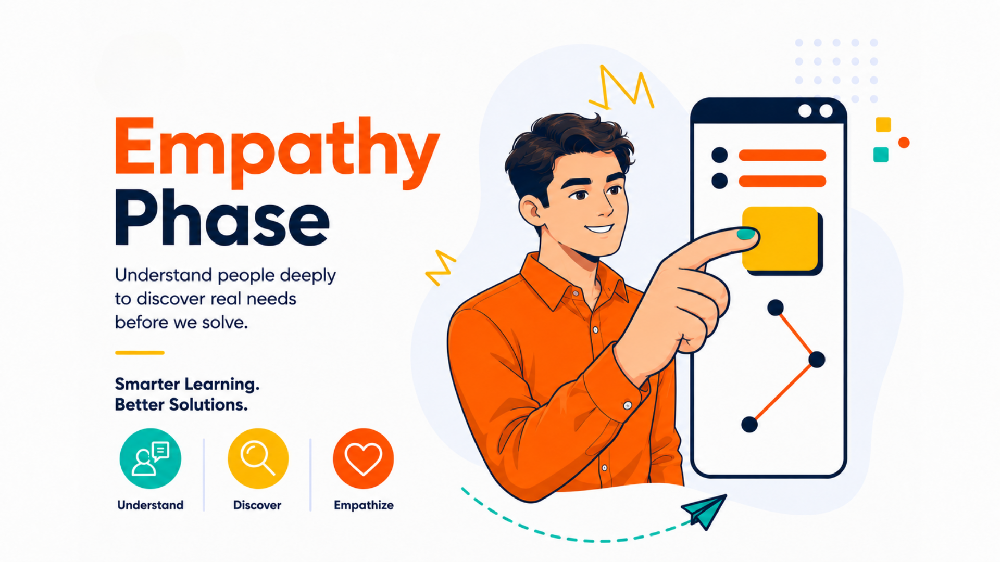

Phase 01 · Empathy
Understand users before you solve.
In this phase, your team interviews, observes, listens and documents real user needs before moving to Define.
What is Empathy?
Empathy is the first phase of Design Thinking. Students go out into the real world to understand the people they are designing for — their feelings, struggles and real needs.
What students need to do
- Prepare interview questions using T01 Interview Guide.
- Conduct interviews with at least 3 real target users.
- Record and transcribe interviews with permission.
- Complete Empathy Map, Persona and User Needs Summary.
Common mistakes to avoid
- Do not ask leading questions such as “Don’t you think this is a problem?”
- Do not interview only friends. Find real target users.
- Do not assume what users feel without evidence.
- Do not skip observation. Watch what users actually do.
Empathy
Templates
Use each template as a guided learning activity. Start with evidence, then organise what users say, think, do, feel and need.
0
Record Evidence
1
Plan Interview
2
Map Experience
3
Build Persona
4
Summarise Needs